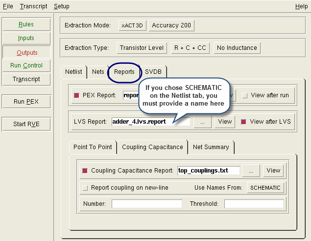

Report files
are essential for debugging an extraction run. You can generate
a PEX report file from Calibre Interactive.
Procedure
- Click the Reports tab.
- Specify filenames as appropriate.
Select PEX Report and specify
a report name, if you want to generate a PEX Report file. You must
specify an LVS report name if you chose SCHEMATIC on the Netlist tab Use
Names From: dropdown list.
- There are five reports available:
The PEX Report summarizes
capacitance from the run.
The LVS Report is the same
as the one produced as part of a Calibre nmLVS run.
The Point to Point Resistance
report calculates resistance between two points on the same net.
See Reporting Net Resistance from Calibre Interactive.
The Coupling Capacitance
report summarizes capacitance between pairs of nets along with total
capacitance of each net. This quickly shows the net pairs with the
most significant coupling. See Reporting Coupled Capacitance from Calibre Interactive.
The Net Summary Report
generates a report which details the parasitic capacitance values
as stored in the PDB.
Figure 1. Enabling Report Output